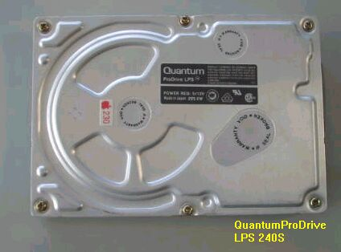

Centris650について
ⅡVi、IIVxの後継機として登場、その筐体はIIViと変わらないが、MC68040の25MHzということで、格段に向上している。
本体の右は、メインテナンス用のHDDで、TAXANのケースから、古くて遅いALPS製500MBドライブを追い出し、SeaGate
のHAWK-2GBを入れてある。キーボードは、TEC PARTS製Macway TP-888KBTTで、なかなか使いやすい。
OS7.6.1で、IE4を入れインターネットを見ることができる。回線速度が向上してしまっている現在では、マシンの遅さが
気になるが、文字の多い掲示板などを見るのには、何の差し支えもない。PowerPCで動作するOSが、040や、030の
マシンでも使えるのは、古いPC98でWindowsを動かすときの苦労と比べ、全くあっけないほどである。()2003/03/16 記)

このCentris650に入っていたQuantum製HDD LPS-240Sは、回転はするがフォーマットがいつまでたっても完了しない
状態になっており、やむをえず他のJUNKなHDDに交換した。Quantum製では、100MBや160MB、540MBなどでは、まだ
何台か使えるものが残っているが、240MBはすべて死んでしまった。
（2003/04/06 記）
68Kマッキントッシュのページに戻る